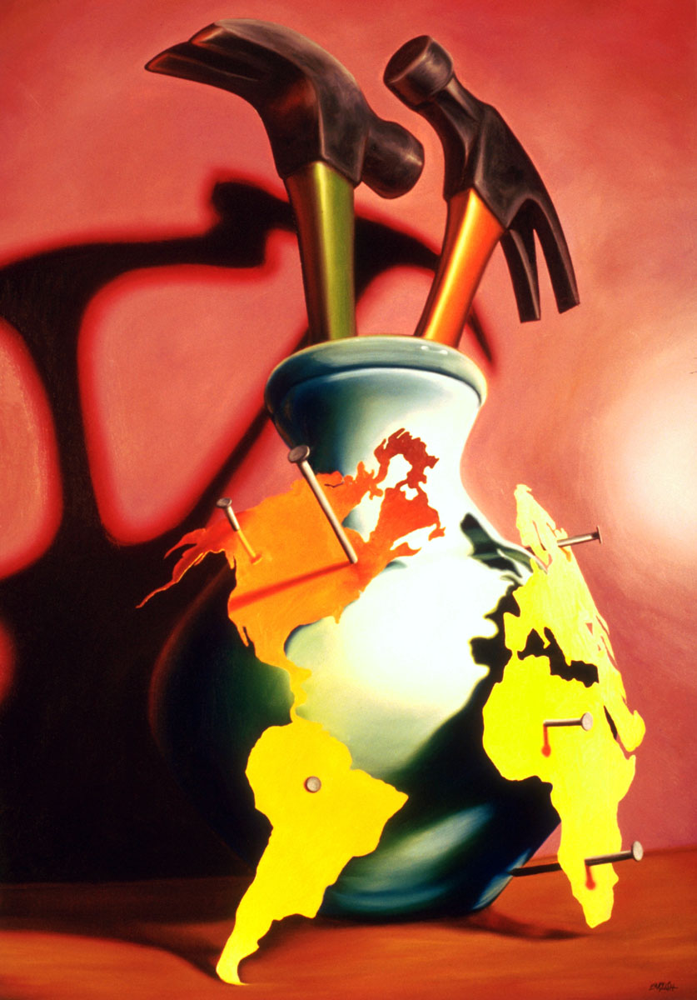

Exhibitions
Tools as Art: The Hechinger Collection, City Museum, Saint Louis, Missouri, US, and elsewhere, July 1, 2001–December 30, 2008.
Literature
Paul Richard and Sarah Tanguy, Tools as Art: The Hechinger Collection (New York: Harry N. Abrams, 1995), p. 125, illustrated.

Ron English, Popaganda: The Art & Subversion of Ron English (San Francisco: Last Gasp, 2001), p. 78. ISBN 1-887128-60-3.

“Ron English - The Reconstruction,” VAGA, 1995.

Provenance
Private collection.
Notes
International Arts & Artists lists the work as 38 × 44 inches; this catalogue follows the 48 × 34 inches recorded by Heritage Auctions.
This composition was later adapted by the artist as a limited-edition print in the Vinyl Chord: A Revolutionary Record Store series.
Ancillary Documentation